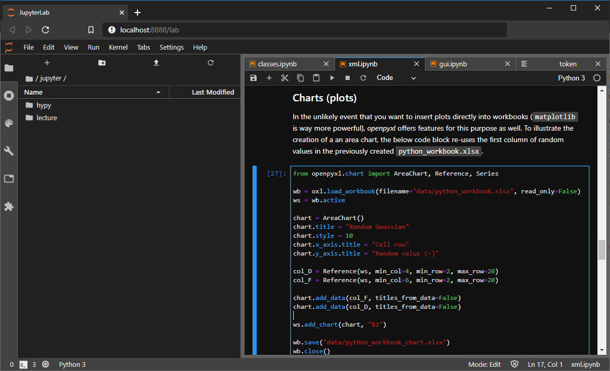

Python (Installation)¶
Python’s two-fold development (Python2 and Python3) and other parallel versions of Python (e.g., ESRI’s ArcGIS or Nvidia’s cuda Python versions) may cause that multiple versions of Python are installed on your computer (even though Python2 is about to disappear). As consequence packages might have been unintentionally or unknowingly installed for another Python interpreter than used in a project. However, the parallel existence of multiple Python interpreters is sometimes beneficial, for instance, when packages are installed that are not compatible with each other. So how to deal with the challenge of having multiple Python interpreters (or environments) installed?
There are multiple answers to this question and the best option depends, to some extent, on personal preferences and the Operating System (OS) - also referred to as platform. For instance, conda environments are preferable on Windows and pip environments on Linux (e.g., Debian/Ubuntu) platforms. conda environments work well on both platforms (and also with macOS), but pip will not work smoothly on Windows because of an issue with the geospatial GDAL library. To work with conda environments, the installation of Anaconda is required (no additional installation of Python is necessary in this case).
- conda environments
A conda environment is a directory on your computer that represents a virtual environment with a particular Python interpreter (e.g., a Python2 or Python3 executable) and packages/libraries. The directory is typically named
env(orvenvfor a virtual environment) and Anaconda will control automatically where the environment directories (folders) are stored on your computer. On Windows, the typical installation directory isC:\users\<your-user-name>\AppData\Local\Continuum\anaconda3\envs\. Note that AppData is a hidden folder (view hidden folders on Windows). Only change the default directory for conda environment directories, if you exactly know what you are doing.- pipenv / venv
pipenv or pip environments are Python environments that can be created with Pythons default pip package-management system (default since Python 2.7.9. / Python 3.4). With pip, a virtual environment can be created (typically stored in a venv folder in the working directory).
This section guides through the installation of a computational environment that is tailored for working with contents in this eBook. The environment uses the flusstools pip-package, which provides many useful routines for river analyses.
pip and venv (Linux Preference)¶
Use pip and venv on Linux
pip and virtual environments are preferable with Linux systems for working with this eBook and the flusstools library.
Quick Guide¶
Consider installing, creating, and activating a new virtual environment for working with the contents of this eBook as explained in the following platform-dependent paragraphs.
To avoid affecting the system’s Python interpreter, set up a virtual environment with venv. The first step is to make sure that Python3 and venv are installed on the system:
sudo apt install python3 python3-venv
Next, make sure that pip3 and tkinter are installed and up to date:
sudo apt install python3-pip python3-tk tk8.6-dev
python3 -m pip install --upgrade pip
python vs. python3
Python2 experienced its sunset in January 2020, but some systems still use Python2 as default for the python command and require a distinguished call of Python3 with the python3 command.
This behavior is more and more deprecated and most up-to-date systems will automatically refer to Python3 when typing python.
Thus, it might be possible that your system requires using python rather than python3 (i.e., use python -m pip install --upgrade pip here and in the following command sequences).
To check the installed version of Python tap:
which python
Then go to the home directory (or wherever you want to install the virtual environment) and create a new virtual environment (e.g., called vflussenv):
cd ~
python3 -m venv vflussenv
Then activate the new environment:
source vflussenv/bin/activate
Double-check that the environment is activated:
which python
Install numpy with:
pip3 install numpy
Then, install QGIS and GDAL for Linux (this should work with any Debian architecture) and make sure to use the correct pip command at the end (i.e., it might be necessary to replace pip3 with pip):
sudo add-apt-repository ppa:ubuntugis/ubuntugis-unstable && sudo apt update
sudo apt install libgeos-dev gdal-bin libgdal-dev
Export the gdal installation path:
export CPLUS_INCLUDE_PATH=/usr/include/gdal
export C_INCLUDE_PATH=/usr/include/gdal
Install gdal for the vflussenv Python environment:
pip3 install GDAL==$(gdal-config --version)
pip3 install GDAL==$(gdal-config –version) –global-option=build_ext –global-option=“-I/usr/include/gdal/”
Now, install flusstools with:
pip3 install flusstools
To verify if flusstools is correctly installed write:
user:~$ python3
Python 3.X.X (default, MMM DD YYYY, hh:mm:ss)
[GCC 9.X.X on linux]
>>> import flusstools as ft
Recall that newer Linux versions may not differentiate between Python2 and Python3 (i.e., use python rather than python3).
Warning
Because GDAL can currently not be directly installed with pip on Windows, trying to set up the computational environment with pip on Windows will very likely fail. Windows users preferably use conda env (Windows Preference), but can alternatively continue with a virtual pip environment for learning Python basics. In this case, geospatial programming contents require an installation of QGIS, which comes with a built-in Python terminal for algorithmic geospatial analyses.
Make sure that Python (>= version 3.4) installed. In addition, install virtualenv (in the following, alternatively use py instead of python, if python returns errors):
python -m pip install --upgrade pip
python -m pip install --user virtualenv numpy
Then go to the directory wherever you want to install a new virtual environment called vflussenv and create the new virtual environment:
cd DIR\TO\ENV
python -m venv vflussenv
Then activate the new environment:
.\vflussenv\Scripts\activate
Double-check that the environment is activated (should return something like .../DIR/TO/ENV/bin/python.exe) and upgrade pip in the environment:
where python
python -m pip install --upgrade pip
Because of issues in the latest version of GDAL, pip-Windows users must use conda to get gdal:
python -m pip install conda
conda install -c conda-forge gdal
GDAL Error: Setup script exited with error: Microsoft Visual C++ 14.0
Currently, there is an issue with installing GDAL when Microsoft Visual C++ is missing or outdated. Thus, to enable the installation of GDAL on Windows, first download and install Microsoft Visual C++ from Microsoft C++ Build Tools.
Finally, install flusstools and its dependencies with:
python -m pip install pandas plotting matplotlib plotly
For geospatial analyses …
Try the following not cross-platform verified solution: Install QGIS and use its Python terminal for installing flusstools:
Start QGIS as Administrator (the following steps will fail if you are not running QGIS as administrator)
Go to Plugins > Python Console
In the Python Console tap:
import pippip.main(["install", "flusstools"])
Alternatively, find the OSGeo4W from the Windows start menu and type py3_env followed by python -m pip install flusstools. Preferably use a conda env (Windows Preference).
The import of flusstools should not return any import error. If there is an import error, find out the troublesome package’s name and re-install it. In particular, the installation of GDAL may be challenging when working with pip, in particular on Windows. To learn more about the installation of GDAL visit the Download > Binaries section on the developer’s website.
Manage pip (Install, Uninstall, or Upgrade) Modules or Packages¶
More than 300,000 projects live on pypi.org and there are packages available for many purposes. To find suitable packages visit https://pypi.org/search/. To install (i.e., add) one of these pip/pip3 packages use:
pip3 install PACKAGE_NAME
python -m pip install --user PACKAGE_NAME
Note
The --user flag is only required if you are not working in a virtual environment. Otherwise, normal users can only manage packages in the local user directory (on Windows: C\Users\USER-NAME\); system packages can only be managed by administrators (on Linux with the sudo command).
To remove (i.e., uninstall) a pip/pip3-installed package use:
pip3 uninstall PACKAGE_NAME
python -m pip uninstall PACKAGE_NAME
To upgrade (update) a package that lives in a local user environment use:
pip3 install --upgrade PACKAGE_NAME
python -m pip install --upgrade --user PACKAGE_NAME
To leave a virtual environment on any platform tab:
deactivate
Read more about virtual environments and pip at https://packaging.python.org.
conda env (Windows Preference)¶
This section features the quick installation of the flussenv environment.yml for Anaconda followed by more detailed explanations on the creation and management of conda environments.
Use conda on Windows
Anaconda and conda environments are preferable with Windows systems for working with this eBook and the flusstools library.
Quick Guide¶
The quick guide to installing Python with Anaconda on Windows is accompanied by a video embedded below the numbered workflow (though the number steps reduced since the video was published):
Download the flussenv environment file (right-click > Save Link as … > select target directory). If needed, copy the file contents of
environment.ymlin a local text editor, such as NotepadPlusPlus (Text Editor), and save the file for example in a directory called C:/temp/).Open a command line
On Windows: Anaconda Prompt (
Windowskey > typeAnaconda Prompt> hitEnter).On Linux: Open Terminal
Navigate to the download directory where
environment.ymlis located (usecdto navigate, for example, tocd C:/temp/).Enter
conda env create -f environment.yml(this creates an environment calledflussenv).
… takes a while …Activate flussenv:
conda activate flussenvInstall flusstools:
pip install flusstools
To make the new flussenv and its libraries available for JupyterLab, add a new kernel with the activated flussenv in Anaconda Prompt:
ipython kernel install --user --name=fluss_kernel
When running Jupyter, the fluss_kernel will be available in the top menu Kernel > Change Kernel…
Sebastian Schwindt@ Hydro-Morphodynamics channel on YouTube.
Create and Install¶
To create a new conda environment from scratch, which differs from the flussenv environment.yml, open Anaconda Prompt and type (replace ENV-NAME for example with flussenv):
conda create --name ENV-NAME python=3.8
Activate Environment¶
The active environment corresponds to the environment that you are working in (e.g., for installing libraries or using Jupyter). To activate the above-created flussenv environment:
Open Anaconda Prompt (
Windowskey or click on the start menu of your operating system > typeAnaconda Prompt> hitEnter).Activate the desired environment with
conda activate ENV-NAME(e.g.,conda activate flussenv)
Install Additional Python Packages¶
To install (more) Python packages in a conda environment:
Activate the environment where you want to install, remove, or modify packages (e.g.,
conda activate flussenv- see above).Install a package by typing
conda install PACKAGE_NAME(if the package cannot be found, tryconda install -c conda-forge PACKAGE_NAME).
Alternatively, press the Windows key (or click on the start menu of your operating system) > type Anaconda Navigator > got to the Environments tab > select the flussenv environment (or create another environment) > install > install packages.
Remove (Delete) Environment¶
To remove a conda environment open Anaconda Prompt and type:
conda env remove --name ENV-NAME-TO-REMOVE
For example, to remove the flussenv environment type:
conda env remove --name flussenv
There are many more conda commands and the most important ones are summarized in the developer’s conda cheat sheet.
Setup Interfaces and IDEs¶
To follow the contents of this eBook and run code cells, it is recommended to use JupyterLab, which can be installed locally or run it remotely by clicking on  - the batch is implemented at the top of all Jupyter notebook-based sections. To create projects, develop programs, or simply complete course assignments, it is recommended to use an Integrated Development Environment (IDE), such as PyCharm with Anaconda.
- the batch is implemented at the top of all Jupyter notebook-based sections. To create projects, develop programs, or simply complete course assignments, it is recommended to use an Integrated Development Environment (IDE), such as PyCharm with Anaconda.
JupyterLab¶
The following descriptions require that JupyterLab is installed for locally editing Jupyter notebooks (.ipynb files), Python scripts (.py files), and folders.
Start JupyterLab by typing jupyter-lab in Terminal.
Start JupyterLab by typing jupyter-lab in Anaconda Prompt.
- Setup Styles
The Kernel menu runs the defined programming language (Python3 in the example below). The Settings menu provides options to configure styles (e.g., choose the JupyterLab Dark theme shown in the below figure). JupyterLab runs on a local server (typically on
localhost:XXPORTXX/lab), which is why it is just like an interactive website in your browser. In the beginning, it takes some getting used to, but one gets quickly familiar with it and there are many advantages such as the inline use of online graphics.Fig. 1 JupyterLab in Dark theme appearance with a Jupyter notebook (xml.ipynb) opened showing the combination of a markdown cell (Charts(plots) and a Python3 cell.¶
- Package Controls
JupyterLab runs an IPython kernel, which refers to the currently activated conda environment. Thus, for installing a package for usage in JupyterLab, follow the above instructions for the chosen environment (learn more about packages in the Packages, Modules and Libraries section). It might be useful to define default imports for IPython and this works as follows:
Look for the (hidden)
.ipythonfolder on your computerWindows: Typically in the user folder (
C:\Users\USER-NAME\.ipython\) (how to show hidden files in WindowsLinux (or other Unix-based system such as macOS): The name of a hidden file starts with a
.and the IPython kernel typically lives in/usr/local/etc/ipython/or/usr/local/etc/.ipython/(either use the terminal and typels -aor simultaneously hit theCTRL+Hkeys)
In the
.ipythonoripythonfolder, create a sub-directory called/profile_default/startup/(if not yet present).If not yet present: Create the directory
.../ipython/profile_default/startup/, with a Python file calledipython_config.py.Open
ipython_config.py(right-click > edit - do not run the file) and add default import packages.For the Python (basics) tutorial, it is recommended to define the following default imports in
ipython_config.py(add modifications, then save and close the file):
import os import sys import numpy as np import pandas as pd import matplotlib as plt import tkinter as tk from tkinter import ttk
For the geospatial Python section, consider to add (read
gdalinstallation instructions first):from osgeo import gdal from osgeo import ogr from osgeo import osr
Note
The
default_profileis part of the default Jupyter installation and it is normally not necessary to create it manually. The IPython docs provide more detail about custom settings and modifying profiles on any platform.
Atom and Python¶
Depending on your platform make sure that all requirements are installed to configure Atom’s platformio-ide-terminal package:
Requirements
platformio-ide-terminal:In Linux Terminal tap:
sudo apt install clang(optional)In Atom go to File > Preferences > + Install and install the
platformio-idepackage (see also Atom Packages).
Install flusstools according to the pip Quick Guide, preferably in a virtual environment.
Do not conda-install flusstools on Linux (use pip).
When flusstools and its requirements are correctly installed launch platformio-ide-terminal (in Atom go to Packages (top menu) > platformio-ide-terminal > New Terminal).
In the opened Terminal take the following actions:
Optionally activate the vflussenv environment (skip this step if you installed flusstools in your system Python interpreter):
cd ~/where/vflussenv-lives
source vflussenv/bin/activate
Start Atom:
user:~$ atom
Requirements
platformio-ide-terminal: In Atom go to File > Settings > + Install and install theplatformio-ide-terminalpackage (see also Atom Packages).Anaconda must be installed.
Make sure that the flussenv environment.yml (conda environment) is installed along with flusstools (see the conda Quick Guide).
Do not try to pip-install flusstools outside of a conda environment on Windows.
To set up a Python Anaconda terminal in Atom the following first-time-start steps are required:
Launch
platformio-ide-terminal(in Atom go to Packages (top menu) > platformio-ide-terminal > New Terminal)Typically, PowerShell will open, where the following commands need to be entered:
Set-ExecutionPolicy -Scope CurrentUser RemoteSignedconda init
Close the current PowerShell (platformio-ide-terminal window).
Once this is done, the flusstools package can be activated and used for regular use in a conda environment in platformio-ide-terminal as follows:
Launch
platformio-ide-terminal(in Atom go to Packages (top menu) > platformio-ide-terminal > New Terminal)In the terminal activate the flussenv environment:
conda activate flussenvIn the activated environment launch python
atom
Read more about the integration of Python and environments in Atom in the section on the installation of Atom (IDE).
PyCharm Python Projects¶
After the successful installation of PyCharm with Anaconda, use a conda (or pip) environment as interpreter. The following steps guide through the setup of PyCharm for using conda environments.
Launch PyCharm and create a new project.
Fig. 2 Create a new project in PyCharm.¶
Define The new
flussenvenvironment as Pure Python project interpreter:Select *New environment using
CondaIn the Location box select the
flussenvenvironmentClick Create to create the new project.
Fig. 3 Setup the flussenv conda environment for the new project.¶
Verify that the project interpreter is correctly defined:
Click on PyCharm’s File menu and select Settings…
In the Settings window go to Project: [NAME] > Project Interpreter
Make sure that the above-created
flussenvconda environment is defined as Project Interpreter.
Fig. 4 Verify the correct setup of the Project Interpreter.¶
Struggling with setting up PyCharm?
PyCharm and Anaconda are designed for working hand-in-hand and the developers provide an up-to-date documentation for setting up PyCharm to work with conda environments.